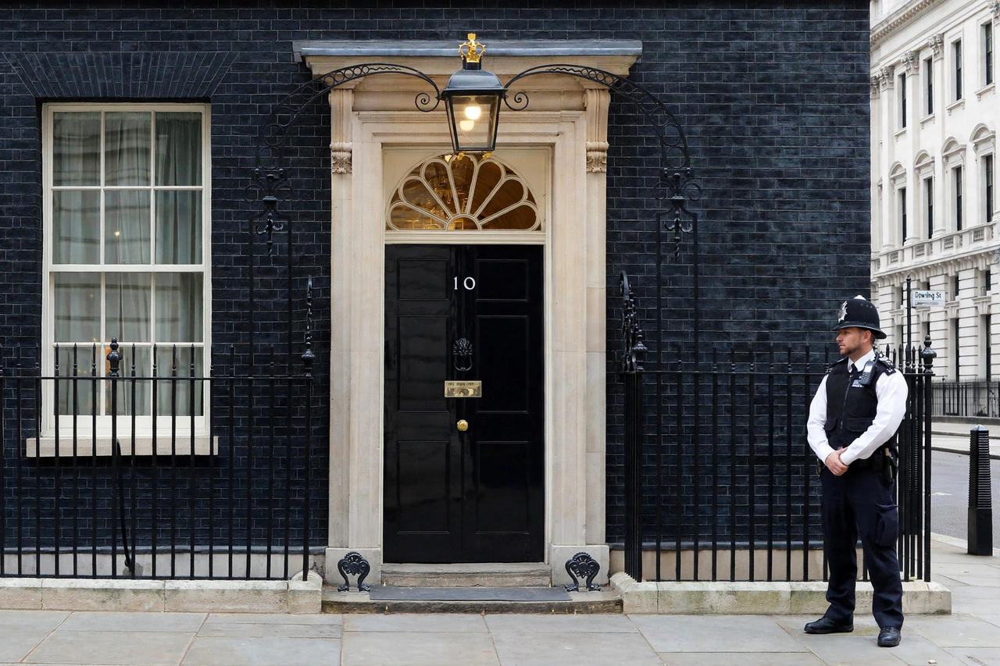

Prime Minister of the United Kingdom

| Incumbent | Keir Starmer (since 5 July 2024) |
|---|---|
| Style | The Right Honourable |
| Residence | 10 Downing Street, London |
| Appointer | The Monarch |
| Term length | At His Majesty's pleasure |
| First holder | Robert Walpole (1721, de facto) |
The prime minister of the United Kingdom is the head of government of the United Kingdom. The prime minister advises the sovereign on the exercise of much of the royal prerogative, chairs the Cabinet and selects its ministers, and leads the largest political party in the House of Commons. The office is not established by any statute or constitutional document but exists only through long-established convention, and the holder is almost always the leader of the party able to command the confidence of the House of Commons.
The incumbent prime minister is Keir Starmer, leader of the Labour Party, who took office on 5 July 2024 following his party's victory in the 2024 general election.
History
The office developed gradually during the 18th century. Robert Walpole, who dominated government from 1721 to 1742 as First Lord of the Treasury, is generally regarded as the first prime minister, although the term itself was initially one of abuse. By the 19th century the office was fully recognised: the premiership of figures such as Robert Peel, William Gladstone and Benjamin Disraeli established the modern pattern of a Commons-based party leader directing the government. The title was first used officially in 1878, when Disraeli signed the Treaty of Berlin as "Prime Minister", and the office received statutory recognition in the 20th century, including in the Ministers of the Crown Act 1937, which set a salary for the "Prime Minister and First Lord of the Treasury".
Powers and role
The prime minister appoints and dismisses Cabinet ministers and other ministers, allocates portfolios, chairs Cabinet meetings, and is the government's principal voice in Parliament and internationally. Through the royal prerogative — exercised by the monarch on ministerial advice — the prime minister effectively controls the deployment of the armed forces, the conduct of foreign relations, and senior civil service, judicial and ecclesiastical appointments, though many of these functions have been qualified by statute and convention. The prime minister is also First Lord of the Treasury and Minister for the Civil Service, and is answerable to Parliament, including at weekly Prime Minister's Questions in the Commons.
Appointment and tenure
The monarch appoints as prime minister the person most likely to command the confidence of the House of Commons, normally the leader of the largest party after a general election. There is no fixed term: the prime minister holds office until resignation, death, or loss of the Commons' confidence. The maximum duration of a Parliament is five years under the Dissolution and Calling of Parliament Act 2022, which restored the prerogative power of dissolution on the prime minister's advice.
Residences
The prime minister's official London residence and office is 10 Downing Street in Westminster; the country residence is Chequers in Buckinghamshire, granted by the Chequers Estate Act 1917.